RTX Series
The RTX series is the latest from Dakota Digital, focused on retaining that stock look without sacrificing the late-model features you love. Every effort has been put forth to incorporate OEM design elements regarding the layout, face styling and indicators. A casual glance may dismiss these as original equipment, but once you hit the switch and the LED backlighting comes on in your favorite color scheme, all doubts will be removed.
When opening the vehicle's door, the vintage-looking rolling odometer provides a stock appearance.Turning on the ignition, the TFT message center can be fully configured to display just about any piece of information needed, from the complementary home screen to the user-configurable data screens!
Starting from scratch, CNC machined housings are filled with electronics designed and built in-house, helping Dakota Digital once again raise the bar for aftermarket instrumentation. Bluetooth integration, GPS technology and RGB backlighting with a full color TFT screen provide the technology that you want.
The RTX Series offers the timeless look of yesterday, with the features and functionality of today!

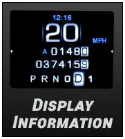

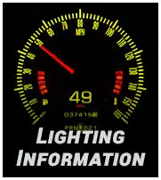

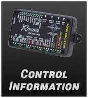

Pages: 1 2 [ next ]
Pages: 1 2 [ next ]
48 products
 1957-60 Ford Pickup & 1961-67 Econoline Van RTX InstrumentsRTX-57F-PU-X$1,765.00
1957-60 Ford Pickup & 1961-67 Econoline Van RTX InstrumentsRTX-57F-PU-X$1,765.00 1965-66 Ford Custom Cab Pickup RTX InstrumentsRTX-65F-PU-X$1,765.00
1965-66 Ford Custom Cab Pickup RTX InstrumentsRTX-65F-PU-X$1,765.00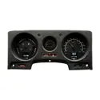
1980-90 Toyota FJ60 RTX InstrumentsRTX-80T-FJ-X, RTX-88T-FJ-X$1,765.00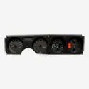
1982-92 Pontiac Firebird RTX InstrumentsRTX-82P-FIR-X$1,765.00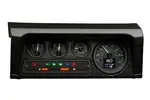
1983-98 Land Rover Defender, Non Puma RTX Instruments1983-98 Land Rover Defender, Non Puma RTX Instruments$1,765.00 1988-91 Chevy/ GMC Pickup/ Suburban/ Tahoe/ Yukon RTX InstrumentsRTX-88C-PU-X$1,765.00
1988-91 Chevy/ GMC Pickup/ Suburban/ Tahoe/ Yukon RTX InstrumentsRTX-88C-PU-X$1,765.00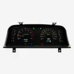
1991-97 Toyota FJ RTX InstrumentsRTX-91T-FJ-X$1,765.00 1992-94 Chevy/ GMC Pickup/ Suburban/ Tahoe/ Yukon RTX InstrumentsRTX-92C-PU-X$1,765.00
1992-94 Chevy/ GMC Pickup/ Suburban/ Tahoe/ Yukon RTX InstrumentsRTX-92C-PU-X$1,765.00 1995-98 Full-size, 1995-00 SUV & HD Pickup Chevy/ GMC RTX InstrumentsRTX-95C-PU-X$1,765.00
1995-98 Full-size, 1995-00 SUV & HD Pickup Chevy/ GMC RTX InstrumentsRTX-95C-PU-X$1,765.00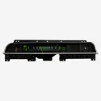
1969-70 Chevy Caprice/ Impala RTX InstrumentsRTX-69C-IMP-X$1,765.00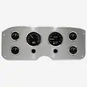
1955-59 GMC Pickup RTX InstrumentsRTX-55-GMC-X$1,765.00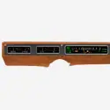
1971-80 International Scout II/ 1969-75 D Series Pickup and Travelall RTX InstrumentsRTX-71i-SCT-X$1,765.00 1980-86 Ford Pickup and Bronco RTX InstrumentsRTX-80F-PU-X$1,765.00
1980-86 Ford Pickup and Bronco RTX InstrumentsRTX-80F-PU-X$1,765.00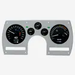
1982-89 Camaro RTX InstrumentsRTX-82C-CAM-X$1,765.00 1987-91 Ford Pickup and Bronco RTX InstrumentsRTX-87F-PU-X$1,765.00
1987-91 Ford Pickup and Bronco RTX InstrumentsRTX-87F-PU-X$1,765.00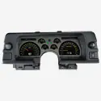
1990-92 Camaro RTX InstrumentsRTX-90C-CAM-X$1,765.00 1992-96 Ford Pickup, and Bronco RTX InstrumentsRTX-92F-PU-X$1,765.00
1992-96 Ford Pickup, and Bronco RTX InstrumentsRTX-92F-PU-X$1,765.00 1997-04 Ford Full Size Pickup, and Expedition RTX InstrumentsRTX-97F-PU-X$1,765.00
1997-04 Ford Full Size Pickup, and Expedition RTX InstrumentsRTX-97F-PU-X$1,765.00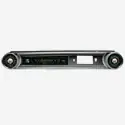
1965 Chevy Caprice/ Impala RTX InstrumentsRTX-65C-IMP-X$1,765.00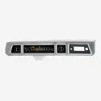
1966 Chevy Caprice/Impala RTX InstrumentsRTX-66C-IMP-X$1,765.00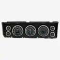
1967 Chevy Caprice/Impala RTX InstrumentsRTX-67C-IMP-X$1,765.00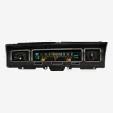
1968 Chevy Caprice/Impala RTX InstrumentsRTX-68C-IMP-X$1,765.00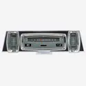
1961-63 Lincoln RTX InstrumentsRTX-61L-X$2,100.00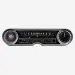
1965-66 Cadillac RTX InstrumentsRTX-65C-CAD-X$2,100.00 1986-91 Jeep Wagoneer & 1986-88 J Trucks RTX Instrument SystemRTX-86J-WAG-X$1,765.00
1986-91 Jeep Wagoneer & 1986-88 J Trucks RTX Instrument SystemRTX-86J-WAG-X$1,765.00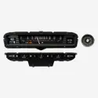
1959 Cadillac RTX InstrumentsRTX-59C-CAD-X$2,100.00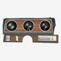
1970-72 Oldsmobile Cutlass 442 RTX InstrumentsRTX-70o-CUT-X$1,765.00 1979-86 Ford Mustang RTX InstrumentsRTX-79F-MUS-X$1,765.00
1979-86 Ford Mustang RTX InstrumentsRTX-79F-MUS-X$1,765.00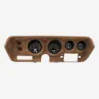
1971-74 B-Body Rallye: Plymouth GTX, RoadRunner and Dodge Charger, '71 SuperBee RTX InstrumentsRTX-71D-CHG-X$1,995.00 1990-93 Ford Mustang RTX InstrumentsRTX-90F-MUS-X$1,765.00
1990-93 Ford Mustang RTX InstrumentsRTX-90F-MUS-X$1,765.00 1987-89 Ford Mustang RTX InstrumentsRTX-87F-MUS-X$1,765.00
1987-89 Ford Mustang RTX InstrumentsRTX-87F-MUS-X$1,765.00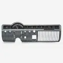
1950-51 Mercury RTX Instrument SystemRTX-50M-X$1,765.00 1953-57 Chevy Corvette RTX InstrumentsRTX-53C-VET-X$2,550.00
1953-57 Chevy Corvette RTX InstrumentsRTX-53C-VET-X$2,550.00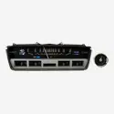
1960 Cadillac RTX InstrumentsRTX-60C-CAD-X$2,100.00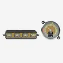
1942-48 Ford Car RTX Instrument SystemRTX-42F-X$1,765.00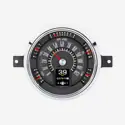
1949-50 Ford Car RTX Instrument SystemRTX-49F-X$1,765.00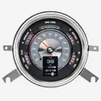
1949-50 Chevy Car RTX InstrumentsRTX-49C-X$1,765.00- 1951 Ford Car RTX InstrumentsRTX-51F-X$1,765.00
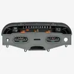
1958 Chevy Impala RTX InstrumentsRTX-58C-IMP-X$1,765.00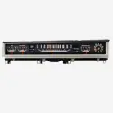
1968-70 Mopar B-Body: Coronet, Belvedere, Satellite and Road RunnerRTX-68D-STD-X$1,995.00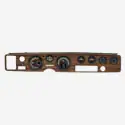
1970-81 Pontiac Firebird RTX InstrumentsRTX-70P-FIR-X$1,765.00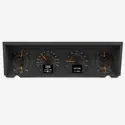
1977-90 Chevy Caprice/ Impala & 1984-86 Pontiac Parisienne RTX InstrumentsRTX-77C-CAP-X$1,765.00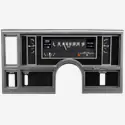
1984-87 Buick Regal and Grand National RTX InstrumentsRTX-84B-REG-X$1,765.00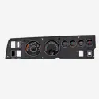
1968-70 Dodge Charger, Super Bee, Coronet R/T, 1970 Plymouth GTX and Road RunnerRTX-68D-CHG-X$1,995.00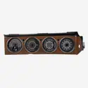
1970-74 Dodge Challenger and 1970-74 Cuda with Rallye dashRTX-70D-CLG-X$1,995.00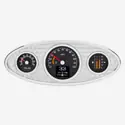
1932 Ford Car RTX InstrumentsRTX-32F-X$1,765.00- 1933-34 Ford Car RTX InstrumentsRTX-33F-X$1,765.00
 1940 Ford Car and 1940-47 Ford Truck RTX InstrumentsRTX-40F-X$1,765.00
1940 Ford Car and 1940-47 Ford Truck RTX InstrumentsRTX-40F-X$1,765.00
Not sure what fits?
Talk to a tech in Sioux Falls, Monday to Friday, 8am to 5pm Central.